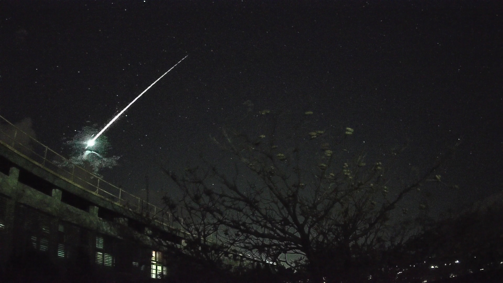

cam1（鏡頭朝北北西）拍到的畫面。把那幾秒的影片每一格疊在一起，流星走過的路就變成一條線；沒有修過圖。

要提報到國際流星組織（IMO）的同學：
- 按「下載照片」，照片會存到這台電腦或平板。到表單的 Upload your Fireball Photo 那一頁再把它傳上去。
- 看下面的影片：顏色、有沒有爆亮一下、消失後有沒有留下痕跡，勾在學習單背面。
- 方位和仰角先自己用學習單上的格線讀。讀完再到影片的說明欄對答案（找「起點」「終點」）。
這一顆的資料
時間（台灣）
11 月 19 日（四）04:34
2026 年
世界時（UT）
11-18 20:34
2026 年
拍到的攝影機
cam1
鏡頭朝北北西
持續多久
約 1.4 秒
攝影機每秒拍 25 格
影片
方位、仰角這些數字寫在影片的說明欄：按上面的「到 YouTube 看影片」，把影片下面的說明展開，找「起點」和「終點」。